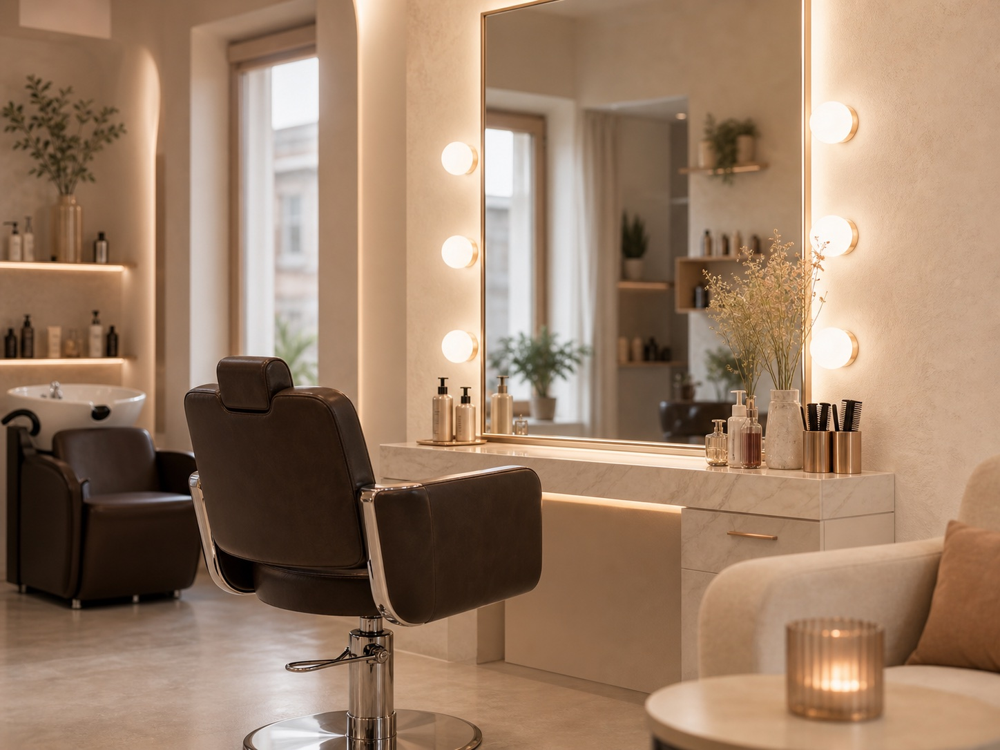

Dámské střihy
Střih navržený podle tvaru obličeje, typu vlasů a vašeho stylu.
Zeptat se na termínSoft Luxury Hair Studio
Kadeřnický salon v Poličce s osobním přístupem, péčí o detail a prostorem pro vaši proměnu.

Orientační služby
Kadeřnický salon Polička pro střihy, barvení vlasů, melíry, tónování, styling i vlasovou péči. Konkrétní postup a cena se domlouvají podle vlasů a přání zákazníka.
Střih navržený podle tvaru obličeje, typu vlasů a vašeho stylu.
Zeptat se na termínČistý, upravený a praktický střih pro každý den.
Zeptat se na termínKlidný přístup a rychlé úpravy pro malé zákazníky.
Zeptat se na termínOživení barvy, přirozené odstíny i výraznější změny po konzultaci.
Zeptat se na termínJemné projasnění, přirozený efekt a postup podle kvality vlasů.
Zeptat se na termínFoukaná, úprava účesu a doporučení vhodné vlasové péče.
Zeptat se na termínProč přijít
Každé vlasy mají jinou kvalitu, historii i potřebu. Proto je základem konzultace, domluva a výsledek, který působí přirozeně v běžném životě.
Domluvit návštěvuKroků péče od konzultace po doporučení domácí péče.
Doporučení podle typu vlasů, tvaru obličeje a očekávané údržby.
Provozní doba se řeší individuálně podle telefonické dohody.
Příjemné prostředí, péče o detail a osobní komunikace.
Proměny / lookbook
Galerie používá realistické ilustrační fotovizuály služeb bez falešných portrétů. Po dodání podkladů ji lze nahradit skutečnými pracemi salonu.
Současné obrázky jsou ilustrační fotovizuály služeb; reálné fotografie prací lze doplnit po dodání podkladů.
Interaktivní proměna
Funkční před/po slider používá realistický detail vlasové textury. Po dodání reálných podkladů může nést skutečnou proměnu.
O salonu
Kadeřnictví Tereza je lokální kadeřnický salon na adrese Masarykova 192 v Poličce. Nabízí kadeřnické služby s důrazem na osobní domluvu, přirozený výsledek a příjemnou péči. Termíny jsou řešeny individuálně dle telefonické domluvy.
Orientační služby
Přesná cena záleží na délce vlasů, použitém materiálu, časové náročnosti a výsledku konzultace.
Cena dle konzultace a náročnosti služby.
Cena dle konzultace a náročnosti služby.
Cena dle konzultace a náročnosti služby.
Cena dle konzultace a náročnosti služby.
Cena dle konzultace a náročnosti služby.
Kontakt
Nejrychlejší cesta k termínu je telefonická domluva. Pokud se nedovoláte hned, můžete napsat e-mail s krátkým popisem požadované služby.
Provozní doba: dle telefonické domluvy